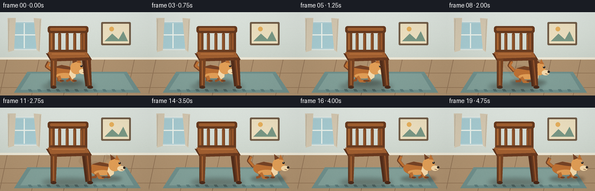
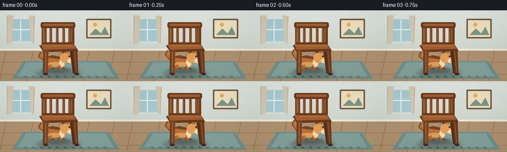

CODING AGENTS AS PIXEL WORLD MODELS
traex/GPT-5.6-Sol · dynamic_spatial_relationship_0005
点击播放 · 原生 RGB 像素
逐轮保存的候选
回放视频、检查图与代码变化。
每份候选均可单独播放。实际图片检查记录在下方工具轨迹中。
候选 01播放与检查图
点击播放 · 原生 RGB 像素


展开代码变化
--- 上一保存版本
+++ 本次保存版本
@@ -0,0 +1,186 @@
+from pathlib import Path
+import math
+import numpy as np
+from PIL import Image, ImageDraw, ImageFilter
+import artifact_io
+
+# Hand-rendered, antialiased 2-D animation. Everything is generated from geometry.
+W, H, N = 256, 144, 20
+S = 4
+SW, SH = W*S, H*S
+
+def sc(v): return int(round(v*S))
+def box(r): return tuple(sc(v) for v in r)
+def pts(seq): return [(sc(x), sc(y)) for x,y in seq]
+
+def ellipse(d, r, fill, outline=None, width=1):
+ d.ellipse(box(r), fill=fill, outline=outline, width=sc(width) if outline else 1)
+def polygon(d, p, fill, outline=None): d.polygon(pts(p), fill=fill, outline=outline)
+def line(d, p, fill, width=1, joint='curve'): d.line(pts(p), fill=fill, width=sc(width), joint=joint)
+def rounded(d, r, radius, fill, outline=None, width=1):
+ d.rounded_rectangle(box(r), radius=sc(radius), fill=fill, outline=outline, width=sc(width))
+
+def shadow_ellipse(im, r, color=(44,30,19,85), blur=4):
+ lay = Image.new('RGBA', (SW,SH), (0,0,0,0)); ld=ImageDraw.Draw(lay)
+ ld.ellipse(box(r), fill=color)
+ lay=lay.filter(ImageFilter.GaussianBlur(sc(blur)))
+ im.alpha_composite(lay)
+
+def make_background():
+ # quiet, warmly lit room with a fixed camera
+ y=np.linspace(0,1,SH)[:,None,None]
+ top=np.array([224,231,225],float); bot=np.array([190,199,188],float)
+ arr=np.tile((top*(1-y)+bot*y), (1,SW,1)).astype(np.uint8)
+ arr=np.dstack((arr, np.full((SH,SW),255,dtype=np.uint8)))
+ im=Image.fromarray(arr,'RGBA'); d=ImageDraw.Draw(im)
+ # soft sunlit wall panel / window, restrained so the action remains prominent
+ rounded(d,(18,16,65,65),2,(184,211,215,255),(235,241,235,255),1)
+ rounded(d,(21,19,62,62),1,(166,202,208,255))
+ line(d,[(41.5,19),(41.5,62)],(235,241,234,230),2)
+ line(d,[(21,39),(62,39)],(235,241,234,230),2)
+ # curtains
+ polygon(d,[(13,10),(27,10),(24,66),(14,69)],(211,199,176,255))
+ polygon(d,[(58,10),(71,11),(68,69),(63,65)],(211,199,176,255))
+ line(d,[(15,12),(14,66)],(184,174,154,170),1)
+ line(d,[(69,13),(67,66)],(184,174,154,170),1)
+ # wall molding and floor
+ d.rectangle(box((0,78,256,82)),fill=(235,230,213,255))
+ d.rectangle(box((0,82,256,144)),fill=(174,145,111,255))
+ # floor boards
+ for xx in [12,67,122,180,231]:
+ line(d,[(xx,82),(xx-13,144)],(140,111,82,70),1)
+ for yy in [105,130]: line(d,[(0,yy),(256,yy)],(146,116,86,80),1)
+ # rug behind action
+ polygon(d,[(47,103),(218,103),(242,139),(24,139)],(111,143,139,255))
+ polygon(d,[(53,106),(213,106),(230,134),(35,134)],(130,160,153,255))
+ # simple edge pattern
+ for xx in range(48,222,16):
+ polygon(d,[(xx,133),(xx+5,133),(xx+8,137),(xx+2,137)],(92,124,123,150))
+ # framed wall art
+ rounded(d,(174,17,225,57),2,(112,91,70,255))
+ rounded(d,(177,20,222,54),1,(236,223,191,255))
+ polygon(d,[(180,50),(193,37),(204,47),(212,33),(220,50)],(121,151,132,255))
+ ellipse(d,(188,25,196,33),(229,174,91,255))
+ return im
+
+BG = make_background()
+
+def draw_dog(frame, cx, baseline, run_amount, phase, alpha=255, ghost=False):
+ """A small golden dog in clean side profile, looking/running right."""
+ layer=Image.new('RGBA',(SW,SH),(0,0,0,0)); d=ImageDraw.Draw(layer)
+ bob = -1.6*math.sin(phase*2) * run_amount
+ cy=baseline-15+bob
+ fur=(188,112,51,alpha); fur_light=(225,158,86,alpha); dark=(117,67,38,alpha)
+ cream=(245,218,172,alpha); ink=(48,38,31,alpha)
+ # tail: a lively curved tail, extending to the left
+ wag=math.sin(frame*.95)*3*(1-run_amount)+math.sin(phase)*2
+ line(d,[(cx-22,cy-4),(cx-31,cy-12-wag),(cx-27,cy-20-wag)],dark,6)
+ line(d,[(cx-22,cy-5),(cx-30,cy-12-wag),(cx-26,cy-19-wag)],fur,4)
+ # back legs are slightly muted to give depth
+ stride=math.sin(phase)
+ if run_amount < .15:
+ legA, legB = -2, 3
+ else:
+ legA, legB = 8*stride, -8*stride
+ # far legs first: jointed, rounded strokes
+ line(d,[(cx-12,cy+6),(cx-11-legA*.25,cy+13),(cx-14-legA,baseline)],(151,82,40,alpha),4)
+ line(d,[(cx+11,cy+5),(cx+9-legB*.25,cy+13),(cx+6-legB,baseline)],(151,82,40,alpha),4)
+ # torso with dark dorsal patch and warm belly
+ ellipse(d,(cx-23,cy-12,cx+18,cy+10),fur)
+ polygon(d,[(cx-19,cy-9),(cx-5,cy-13),(cx+12,cy-9),(cx+16,cy-4),(cx-1,cy-6)],dark)
+ ellipse(d,(cx-15,cy+1,cx+15,cy+10),fur_light)
+ # near legs
+ line(d,[(cx-10,cy+6),(cx-7+legA*.25,cy+14),(cx-3+legA,baseline)],fur,5)
+ line(d,[(cx+10,cy+5),(cx+12+legB*.25,cy+13),(cx+14+legB,baseline)],fur,5)
+ # paws
+ ellipse(d,(cx-7+legA,baseline-2,cx+1+legA,baseline+1),dark)
+ ellipse(d,(cx+10+legB,baseline-2,cx+18+legB,baseline+1),dark)
+ # neck/chest tuft
+ polygon(d,[(cx+11,cy-9),(cx+20,cy-10),(cx+19,cy+8),(cx+13,cy+12),(cx+8,cy+3)],cream)
+ # head, muzzle faces unmistakably right
+ ellipse(d,(cx+10,cy-19,cx+31,cy+3),fur_light)
+ # floppy ear and a smaller far ear
+ polygon(d,[(cx+14,cy-16),(cx+13,cy-26),(cx+22,cy-19)],dark)
+ polygon(d,[(cx+21,cy-17),(cx+24,cy-25),(cx+29,cy-16)],fur)
+ ellipse(d,(cx+25,cy-6,cx+38,cy+3),cream)
+ ellipse(d,(cx+35,cy-5,cx+39,cy-1),ink)
+ # eye and glint
+ ellipse(d,(cx+27,cy-13,cx+31,cy-9),ink)
+ ellipse(d,(cx+28,cy-12.7,cx+29.2,cy-11.5),(255,255,245,alpha))
+ # smile / mouth
+ line(d,[(cx+31,cy),(cx+35,cy+1)],dark,1)
+ if ghost:
+ layer=layer.filter(ImageFilter.GaussianBlur(sc(1.0)))
+ return layer
+
+def draw_chair(im):
+ # Chair is always composited after the dog: at the opening it visibly occludes
+ # the dog, making the requested "behind" relation literal.
+ d=ImageDraw.Draw(im)
+ # rear feet/legs
+ polygon(d,[(87,68),(95,68),(93,128),(87,128)],(91,52,29,255))
+ polygon(d,[(139,67),(147,67),(153,128),(147,128)],(82,45,26,255))
+ # back uprights
+ rounded(d,(84,26,94,77),3,(117,68,35,255))
+ rounded(d,(140,26,150,77),3,(101,57,31,255))
+ # warm edge highlights
+ rounded(d,(87,29,90,72),1,(167,101,50,255))
+ rounded(d,(143,29,146,71),1,(151,86,43,255))
+ # back slats, strongly readable silhouette
+ for xx in [100,113,126,138]:
+ rounded(d,(xx,36,xx+5,73),2,(125,72,37,255))
+ line(d,[(xx+1.5,39),(xx+1.5,70)],(173,104,52,200),1)
+ rounded(d,(82,24,152,36),4,(102,57,30,255))
+ rounded(d,(86,27,148,32),2,(159,94,47,255))
+ rounded(d,(85,65,150,75),3,(104,59,31,255))
+ # seat and its bevel
+ polygon(d,[(79,71),(151,71),(158,82),(87,84)],(93,52,29,255))
+ polygon(d,[(82,69),(149,69),(154,78),(87,80)],(159,94,48,255))
+ polygon(d,[(87,80),(154,78),(157,83),(88,85)],(105,57,31,255))
+ line(d,[(89,72),(146,72)],(198,126,66,180),1)
+ # front legs are nearest and cover dog
+ polygon(d,[(88,80),(98,80),(96,131),(89,131)],(119,67,34,255))
+ polygon(d,[(146,79),(156,80),(158,131),(151,131)],(103,56,30,255))
+ line(d,[(92,84),(92,126)],(166,98,49,220),2)
+ line(d,[(150,83),(154,126)],(150,84,43,220),2)
+ # feet highlights
+ ellipse(d,(87,127,97,132),(76,44,28,255)); ellipse(d,(150,127,160,132),(71,40,25,255))
+
+frames=[]
+for f in range(N):
+ im=BG.copy()
+ # chair and dog cast stable/contact shadows on the rug
+ shadow_ellipse(im,(72,122,164,136),(42,30,22,78),4)
+ # Timing: establish the dog behind the chair, then a brisk run, then hold right.
+ if f <= 4:
+ t=0.0
+ elif f >= 15:
+ t=1.0
+ else:
+ raw=(f-4)/11.0
+ t=raw*raw*(3-2*raw) # smooth start and stop
+ cx=111 + 94*t
+ run=math.sin(math.pi*t)**0.55 if 0<t<1 else 0.0
+ baseline=119 + 2*t
+ phase=(f-4)*2.15
+ # shadow follows the dog and remains in front of environmental elements
+ shadow_ellipse(im,(cx-28,baseline-3,cx+33,baseline+7),(44,31,20,90),2.8)
+ # a subtle speed echo only at peak speed
+ if 7 <= f <= 12:
+ ghost=draw_dog(f,cx-7,baseline,run,phase-.7,alpha=35,ghost=True)
+ im.alpha_composite(ghost)
+ dog=draw_dog(f,cx,baseline,run,phase)
+ im.alpha_composite(dog)
+ draw_chair(im)
+ # foreground vignette and mild film grain for depth, deterministic per frame
+ rgb=np.array(im.convert('RGB').resize((W,H),Image.Resampling.LANCZOS),dtype=np.int16)
+ yy,xx=np.mgrid[0:H,0:W]
+ vign=np.clip(((xx-W/2)/(W*.72))**2+((yy-H/2)/(H*.78))**2,0,1)[...,None]
+ rgb=(rgb*(1-.07*vign)).clip(0,255)
+ rng=np.random.default_rng(900+f)
+ noise=rng.normal(0,0.65,rgb.shape[:2])[...,None]
+ rgb=np.clip(rgb+noise,0,255).astype(np.uint8)
+ frames.append(rgb)
+
+frames=np.stack(frames,axis=0)
+artifact_io.save(frames, Path(__file__).resolve().parent)
可观测工具轨迹
实际执行的命令与返回图片。
命令 1exit 0
/bin/bash -lc "cat prompt.txt && printf '\\n---RULES---\\n' && cat GENERATION_RULES.md && printf '\\n---SPEC---\\n' && cat task_spec.json"
命令 2exit 0
/bin/bash -lc "find . -maxdepth 2 -type f -printf '%p\\n' | sort"
命令 3exit 0
/bin/bash -lc 'cat artifact_io.py'
命令 4exit 0
/bin/bash -lc "cat > generate.py <<'PY'
from pathlib import Path
import math
import numpy as np
from PIL import Image, ImageDraw, ImageFilter
import artifact_io
# Hand-rendered, antialiased 2-D animation. Everything is generated from geometry.
W, H, N = 256, 144, 20
S = 4
SW, SH = W*S, H*S
def sc(v): return int(round(v*S))
def box(r): return tuple(sc(v) for v in r)
def pts(seq): return [(sc(x), sc(y)) for x,y in seq]
def ellipse(d, r, fill, outline=None, width=1):
d.ellipse(box(r), fill=fill, outline=outline, width=sc(width) if outline else 1)
def polygon(d, p, fill, outline=None): d.polygon(pts(p), fill=fill, outline=outline)
def line(d, p, fill, width=1, joint='curve'): d.line(pts(p), fill=fill, width=sc(width), joint=joint)
def rounded(d, r, radius, fill, outline=None, width=1):
d.rounded_rectangle(box(r), radius=sc(radius), fill=fill, outline=outline, width=sc(width))
def shadow_ellipse(im, r, color=(44,30,19,85), blur=4):
lay = Image.new('RGBA', (SW,SH), (0,0,0,0)); ld=ImageDraw.Draw(lay)
ld.ellipse(box(r), fill=color)
lay=lay.filter(ImageFilter.GaussianBlur(sc(blur)))
im.alpha_composite(lay)
def make_background():
# quiet, warmly lit room with a fixed camera
y=np.linspace(0,1,SH)[:,None,None]
top=np.array([224,231,225],float); bot=np.array([190,199,188],float)
arr=np.tile((top*(1-y)+bot*y), (1,SW,1)).astype(np.uint8)
arr=np.dstack((arr, np.full((SH,SW),255,dtype=np.uint8)))
im=Image.fromarray(arr,'RGBA'); d=ImageDraw.Draw(im)
# soft sunlit wall panel / window, restrained so the action remains prominent
rounded(d,(18,16,65,65),2,(184,211,215,255),(235,241,235,255),1)
rounded(d,(21,19,62,62),1,(166,202,208,255))
line(d,[(41.5,19),(41.5,62)],(235,241,234,230),2)
line(d,[(21,39),(62,39)],(235,241,234,230),2)
# curtains
polygon(d,[(13,10),(27,10),(24,66),(14,69)],(211,199,176,255))
polygon(d,[(58,10),(71,11),(68,69),(63,65)],(211,199,176,255))
line(d,[(15,12),(14,66)],(184,174,154,170),1)
line(d,[(69,13),(67,66)],(184,174,154,170),1)
# wall molding and floor
d.rectangle(box((0,78,256,82)),fill=(235,230,213,255))
d.rectangle(box((0,82,256,144)),fill=(174,145,111,255))
# floor boards
for xx in [12,67,122,180,231]:
line(d,[(xx,82),(xx-13,144)],(140,111,82,70),1)
for yy in [105,130]: line(d,[(0,yy),(256,yy)],(146,116,86,80),1)
# rug behind action
polygon(d,[(47,103),(218,103),(242,139),(24,139)],(111,143,139,255))
polygon(d,[(53,106),(213,106),(230,134),(35,134)],(130,160,153,255))
# simple edge pattern
for xx in range(48,222,16):
polygon(d,[(xx,133),(xx+5,133),(xx+8,137),(xx+2,137)],(92,124,123,150))
# framed wall art
rounded(d,(174,17,225,57),2,(112,91,70,255))
rounded(d,(177,20,222,54),1,(236,223,191,255))
polygon(d,[(180,50),(193,37),(204,47),(212,33),(220,50)],(121,151,132,255))
ellipse(d,(188,25,196,33),(229,174,91,255))
return im
BG = make_background()
def draw_dog(frame, cx, baseline, run_amount, phase, alpha=255, ghost=False):
\"\"\"A small golden dog in clean side profile, looking/running right.\"\"\"
layer=Image.new('RGBA',(SW,SH),(0,0,0,0)); d=ImageDraw.Draw(layer)
bob = -1.6*math.sin(phase*2) * run_amount
cy=baseline-15+bob
fur=(188,112,51,alpha); fur_light=(225,158,86,alpha); dark=(117,67,38,alpha)
cream=(245,218,172,alpha); ink=(48,38,31,alpha)
# tail: a lively curved tail, extending to the left
wag=math.sin(frame*.95)*3*(1-run_amount)+math.sin(phase)*2
line(d,[(cx-22,cy-4),(cx-31,cy-12-wag),(cx-27,cy-20-wag)],dark,6)
line(d,[(cx-22,cy-5),(cx-30,cy-12-wag),(cx-26,cy-19-wag)],fur,4)
# back legs are slightly muted to give depth
stride=math.sin(phase)
if run_amount < .15:
legA, legB = -2, 3
else:
legA, legB = 8*stride, -8*stride
# far legs first: jointed, rounded strokes
line(d,[(cx-12,cy+6),(cx-11-legA*.25,cy+13),(cx-14-legA,baseline)],(151,82,40,alpha),4)
line(d,[(cx+11,cy+5),(cx+9-legB*.25,cy+13),(cx+6-legB,baseline)],(151,82,40,alpha),4)
# torso with dark dorsal patch and warm belly
ellipse(d,(cx-23,cy-12,cx+18,cy+10),fur)
polygon(d,[(cx-19,cy-9),(cx-5,cy-13),(cx+12,cy-9),(cx+16,cy-4),(cx-1,cy-6)],dark)
ellipse(d,(cx-15,cy+1,cx+15,cy+10),fur_light)
# near legs
line(d,[(cx-10,cy+6),(cx-7+legA*.25,cy+14),(cx-3+legA,baseline)],fur,5)
line(d,[(cx+10,cy+5),(cx+12+legB*.25,cy+13),(cx+14+legB,baseline)],fur,5)
# paws
ellipse(d,(cx-7+legA,baseline-2,cx+1+legA,baseline+1),dark)
ellipse(d,(cx+10+legB,baseline-2,cx+18+legB,baseline+1),dark)
# neck/chest tuft
polygon(d,[(cx+11,cy-9),(cx+20,cy-10),(cx+19,cy+8),(cx+13,cy+12),(cx+8,cy+3)],cream)
# head, muzzle faces unmistakably right
ellipse(d,(cx+10,cy-19,cx+31,cy+3),fur_light)
# floppy ear and a smaller far ear
polygon(d,[(cx+14,cy-16),(cx+13,cy-26),(cx+22,cy-19)],dark)
polygon(d,[(cx+21,cy-17),(cx+24,cy-25),(cx+29,cy-16)],fur)
ellipse(d,(cx+25,cy-6,cx+38,cy+3),cream)
ellipse(d,(cx+35,cy-5,cx+39,cy-1),ink)
# eye and glint
ellipse(d,(cx+27,cy-13,cx+31,cy-9),ink)
ellipse(d,(cx+28,cy-12.7,cx+29.2,cy-11.5),(255,255,245,alpha))
# smile / mouth
line(d,[(cx+31,cy),(cx+35,cy+1)],dark,1)
if ghost:
layer=layer.filter(ImageFilter.GaussianBlur(sc(1.0)))
return layer
def draw_chair(im):
# Chair is always composited after the dog: at the opening it visibly occludes
# the dog, making the requested \"behind\" relation literal.
d=ImageDraw.Draw(im)
# rear feet/legs
polygon(d,[(87,68),(95,68),(93,128),(87,128)],(91,52,29,255))
polygon(d,[(139,67),(147,67),(153,128),(147,128)],(82,45,26,255))
# back uprights
rounded(d,(84,26,94,77),3,(117,68,35,255))
rounded(d,(140,26,150,77),3,(101,57,31,255))
# warm edge highlights
rounded(d,(87,29,90,72),1,(167,101,50,255))
rounded(d,(143,29,146,71),1,(151,86,43,255))
# back slats, strongly readable silhouette
for xx in [100,113,126,138]:
rounded(d,(xx,36,xx+5,73),2,(125,72,37,255))
line(d,[(xx+1.5,39),(xx+1.5,70)],(173,104,52,200),1)
rounded(d,(82,24,152,36),4,(102,57,30,255))
rounded(d,(86,27,148,32),2,(159,94,47,255))
rounded(d,(85,65,150,75),3,(104,59,31,255))
# seat and its bevel
polygon(d,[(79,71),(151,71),(158,82),(87,84)],(93,52,29,255))
polygon(d,[(82,69),(149,69),(154,78),(87,80)],(159,94,48,255))
polygon(d,[(87,80),(154,78),(157,83),(88,85)],(105,57,31,255))
line(d,[(89,72),(146,72)],(198,126,66,180),1)
# front legs are nearest and cover dog
polygon(d,[(88,80),(98,80),(96,131),(89,131)],(119,67,34,255))
polygon(d,[(146,79),(156,80),(158,131),(151,131)],(103,56,30,255))
line(d,[(92,84),(92,126)],(166,98,49,220),2)
line(d,[(150,83),(154,126)],(150,84,43,220),2)
# feet highlights
ellipse(d,(87,127,97,132),(76,44,28,255)); ellipse(d,(150,127,160,132),(71,40,25,255))
frames=[]
for f in range(N):
im=BG.copy()
# chair and dog cast stable/contact shadows on the rug
shadow_ellipse(im,(72,122,164,136),(42,30,22,78),4)
# Timing: establish the dog behind the chair, then a brisk run, then hold right.
if f <= 4:
t=0.0
elif f >= 15:
t=1.0
else:
raw=(f-4)/11.0
t=raw*raw*(3-2*raw) # smooth start and stop
cx=111 + 94*t
run=math.sin(math.pi*t)**0.55 if 0<t<1 else 0.0
baseline=119 + 2*t
phase=(f-4)*2.15
# shadow follows the dog and remains in front of environmental elements
shadow_ellipse(im,(cx-28,baseline-3,cx+33,baseline+7),(44,31,20,90),2.8)
# a subtle speed echo only at peak speed
if 7 <= f <= 12:
ghost=draw_dog(f,cx-7,baseline,run,phase-.7,alpha=35,ghost=True)
im.alpha_composite(ghost)
dog=draw_dog(f,cx,baseline,run,phase)
im.alpha_composite(dog)
draw_chair(im)
# foreground vignette and mild film grain for depth, deterministic per frame
rgb=np.array(im.convert('RGB').resize((W,H),Image.Resampling.LANCZOS),dtype=np.int16)
yy,xx=np.mgrid[0:H,0:W]
vign=np.clip(((xx-W/2)/(W*.72))**2+((yy-H/2)/(H*.78))**2,0,1)[...,None]
rgb=(rgb*(1-.07*vign)).clip(0,255)
rng=np.random.default_rng(900+f)
noise=rng.normal(0,0.65,rgb.shape[:2])[...,None]
rgb=np.clip(rgb+noise,0,255).astype(np.uint8)
frames.append(rgb)
frames=np.stack(frames,axis=0)
artifact_io.save(frames, Path(__file__).resolve().parent)
PY
python generate.py
ls -lh pixels.npz inspection.png index.html frames/00.png frames/19.png"命令 5exit 0
/bin/bash -lc "python - <<'PY'
import numpy as np
p=np.load('pixels.npz')['pixels']
print('packed tensor:',p.shape,p.dtype)
# recover and validate temporal changes
f=np.stack([((p[:,:,i,None] >> np.array([16,8,0])) & 255).astype(np.uint8) for i in range(p.shape[2])])
print('recovered:',f.shape,f.dtype,'range',f.min(),f.max())
print('mean absolute frame deltas:',[round(float(np.abs(f[i].astype(int)-f[i-1]).mean()),2) for i in range(1,20)])
PY"命令 6exit 0
/bin/bash -lc 'python -m py_compile generate.py artifact_io.py && git status --short'
保存候选 1 份；完成命令 6 次；可验证图片返回 0 张。原始 API 响应与完整日志保留在本地。